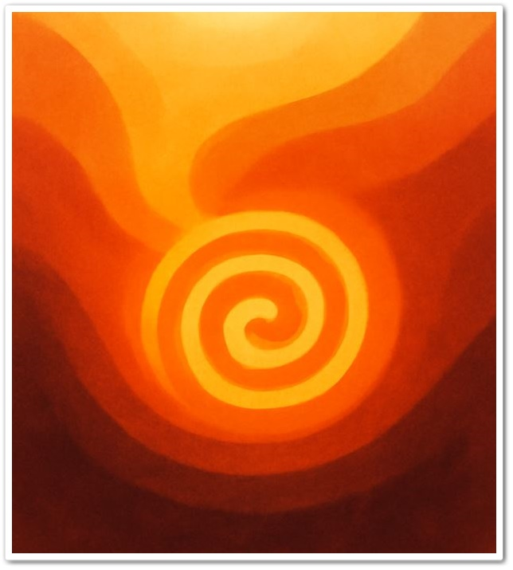

사람은 흔히 따뜻함을 외부 자극에서 찾는다. 전기장판의 열, 포근한 침구, 따스한 조명은 일시적 안정감을 제공하지만, 정서적 회복은 외부 온도만으로는 충족되지 않는다. 심리학에서는 정서적 안정감을 내면적 조절능력(emotional self-regulation)의 산물로 설명하며, 이는 자율신경계의 균형 회복, 인지적 재평가, 감정의 인정(Acknowledgment) 등 여러 과정이 상호작용하여 형성된다. 본 장에서는 외부의 열이 제공하는 일시적 위안과 달리, 마음의 온도가 어떻게 형성되고 회복되는지, 정서조절이 수면과 생리적 반응에 어떠한 영향을 주는 정보를 제시한다.
이 글은 브런치북(https://brunch.co.kr/@205593d149c84b6/3) 『감정도 잠이 필요하다』 '2장. 전기장판의 온도 마음의 온도'에 포함된 내용으로, 전기장판의 외부 자극과 잠을 자는 동안 겪는 내면의 정서조절의 관계를 탐구한다.
1. 외부 온도와는 다른 ‘정서적 온기’의 본질
사람이 느끼는 포근함은 단순한 물리적 열이 아니라 내면이 스스로를 감싸는 정서적 경험과 깊이 연결된다. 전기장판의 열은 피부를 데우지만, 정서적 안정까지 가져오지는 않는다. 심리학에서는 이를 내면적 자기위안(internal soothing)이라 부르며, 이는 스스로에게 다정한 태도를 갖고 자기 상태를 인정할 때 형성되는 심리적 온기이다.
외부 자극에 의존하는 따뜻함은 순간적이지만, 내적 온기는 정서적 생기를 회복시키는 보다 지속적인 힘을 가진다. 외부 열기에만 의존하면 긴장이 잠시 완화되는 듯 보이지만, 내면의 감정적 부담은 여전히 남아 있어 밤이 깊어지면 다시 불안과 과각성으로 이어지기 쉽다. 따라서 진정한 따뜻함은 환경이 아니라 정서적 자기수용(self-acceptance)에서 비롯된다는 점이 강조된다.

2. 외부 자극과 정서조절의 상관성: 일시적 위안과 내적 회복의 차이
전기장판의 열은 즉각적인 신체적 이완을 제공하지만, 이완이 곧 정서적 안정으로 이어지는 것은 아니다. 외부 자극이 제공하는 이완은 단기적 체온 조절 반응에 가깝고, 내면의 불안·걱정·미해결 정서는 그대로 남는다. 이러한 이유로 많은 사람은 따뜻한 환경에서 잠시 편안함을 느끼지만, 곧 다시 각성하거나 땀을 흘리는 등 불편감을 경험하게 된다.
정서심리학에서는 이를 외재적 조절(external regulation)과 내재적 조절(internal regulation)의 차이로 설명한다.
1) 외재적 조절: 환경 자극에 의존하여 순간적 편안함을 얻는 방식
2) 내재적 조절: 감정 인식·수용·이완을 통해 지속적 안정감을 형성하는 방식
내면의 온도는 스위치를 켜듯 조절되지 않는다. “지금의 나를 있는 그대로 받아들이는 태도”가 촉발될 때 비로소 심리적 온기가 형성되며, 이는 장기적 정서 안정으로 이어진다.
3. 감정의 열기와 내면 조절: 호흡과 인지적 정렬의 역할
정리되지 않은 감정은 신체 각성도를 높이며, 특히 수면 전 교감신경계를 활성화시켜 체온을 올리고 몸을 달뜨게 만든다. 이러한 반응은 억눌린 감정이 생리적 경로를 통해 표면화되는 전형적 현상이다.
이를 조절하기 위한 기초적 접근으로 호흡 기반 안정화(breath-based down-regulation)가 널리 활용된다.
1) 느린 호흡(slow breathing)
감정 속도와 동기화되는 호흡은 신경계 균형을 회복시켜 흥분된 신체 상태를 완화한다.
2) 감정 인지(awareness)와 인정(acceptance)
감정을 억제하지 않고 자각하는 과정은 감정의 열기를 낮추고 신체 반응을 자연스럽게 안정시키는 역할을 한다. 이는 감정 조절의 핵심 요소이며, 인지행동치료와 정서중심치료에서 공통적으로 강조되는 원리이다.
3) 내적 이완(internal relaxation)
억눌린 감정을 천천히 해체하며 내면의 긴장을 완화하는 과정은 외부의 열보다 훨씬 지속적이고 심층적인 안정감을 가져온다.
결국 내면을 식히는 연습은 감정을 억누르는 기술이 아니라, 감정을 다루는 능력을 회복하는 과정이다.
4. 열이 식은 뒤에 찾아오는 평온: 감정 조절이 만들어내는 심리적 회복
감정의 열기가 낮아지고 교감신경의 흥분이 줄어들면, 신체와 마음은 함께 안정 상태에 도달한다. 이때 나타나는 평온은 외부 열기에 의한 것이 아니라, 내면의 조절 시스템이 회복된 결과이다.
정서 조절이 이루어지면?
1) 심박이 안정되고,
2) 호흡이 깊어지며,
3) 체온이 균형을 찾고,
4) 수면의 질이 회복된다.
이는 감정을 억지로 억누르는 것이 아니라 감정을 수용함으로써 얻게 되는 자연스러운 신체 반응이다. 감정의 뜨거움이 가라앉을 때 남는 평온은 깊고 오래 지속되는 회복의 신호이다.
5. 외부 열이 아닌 내면의 온기에 의한 회복
수면은 하루의 감정을 정리하고, 신경계를 재조정하며, 심리적 부담을 비워내는 정서적 정화과정이다. 이 과정에서 가장 중요한 요소는 외부적 열이 아니라 내면이 스스로를 안정시키는 능력이다.
외부 열은 일시적 효과는 다음과 같다.
1) 내면의 온기는 장기적 회복
2) 자기수용은 정서 안정의 출발점
3) 내적 온기는 감정의 리듬을 다시 고르게 함
따라서 회복의 중심에는 “마음을 편히 눕힐 수 있는 상태”가 존재한다. 마음이 안정될 때 비로소 몸도 잠들고, 신경계는 회복과 재생의 리듬을 되찾는다.
6. 수면과 정서의 상호작용: 이론적 고찰
REM 수면은 감정 기억을 통합하고, 비REM 수면은 신체 회복과 신경계 안정을 담당한다. 두 과정이 균형을 이룰 때 정서안정과 수면의 질이 향상된다. 반대로 수면 부족은 편도체 반응성을 높여 불안·분노·예민함을 강화시키고, 이는 다시 수면을 방해하는 악순환을 형성한다. 감정을 부드럽게 조율할 수 있을 때 생리적 각성도 안정되며, 자연스럽게 깊은 잠으로 이어지는 것이다.
따뜻함은 스위치가 아니라, 마음이 켜지는 불이다.
정서적 안정은 외부 온도가 아니라 내면에서 스스로 생성되는 심리적 온기에서 비롯된다. 수면과 감정은 서로를 비추며, 감정이 안정될수록 수면은 깊어지고, 수면이 회복될수록 감정도 단단해진다. 따뜻함의 본질은 “내가 나를 다정히 대할 수 있는 상태”에서 완성된다.
참고문헌
Siegel, D. J. (2012). The Developing Mind. Norton.
McEwen, B. (2007). The End of Stress as We Know It. Joseph Henry Press.
Walker, M. (2017). Why We Sleep. Scribner.
Linehan, M. (2015). DBT Skills Training Manual. Guilford.
김완석 외(2019). 『수면의 뇌과학』. 동아시아.
김청택 외(2016). 『건강심리학』. 학지사.
이영호(2018). 『스트레스와 적응의 심리학』. 시그마프레스.
"감정을 조절한다는 것은 억누르는 일이 아니라,
마음이 안전하게 흐를 수 있도록 길을 내어주는 일이다."
2025.12.18 - [감정도 잠이 필요하다] - 수면 불안의 정서적 기제와 내면 반응의 이해(4)
2025.12.18 - [감정도 잠이 필요하다] - 잠의 심리학 : 감정 회복력과 수면의 관계(6)